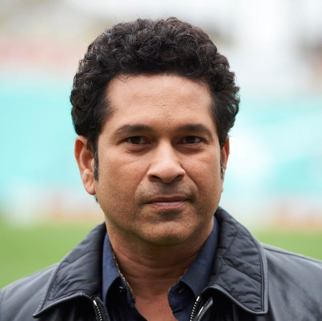

Services Offered:
- Personalized 1-on-1 sessions
- Online group yoga classes
- Free meditation sessions (If you fill the form)
Inspirational Journeys

Steve Jobs: Co-founder of Apple — Jobs practiced Zen Buddhism and was known for his deep interest in yoga and mindfulness, which helped shape his creative thinking and focus.

Sachin Tendulkar: The Indian cricket legend has shared how yoga helped him manage stress, recover from injuries, and maintain mental clarity.

Virat Kohli: Kohli incorporates yoga into his fitness regime to enhance flexibility, core strength, and mental focus.

Robert Downey Jr.: Yoga helped him overcome addiction and improve his mental health and discipline.
Testimonials
- Aarti Mehra, 34 – Yoga helped her feel calmer, sleep better, and boosted posture and energy during a stressful time.
- Rajesh Iyer, 47 – Yoga relieved his chronic back pain and improved focus and flexibility.
- Simran Kaur, 29 – Post-pregnancy yoga aided her weight loss and emotional well-being.
- Ankit Sharma, 22 – Yoga reduced his anxiety and improved focus and memory as a student.
- Nandita Rao, 56 – Gentle, modified yoga increased her energy and joint mobility in later years.
- Neha Verma, 26 – Yoga eased her screen-induced neck and back pain and boosted daily energy.
- Aditya Malhotra, 28 – Yoga helped him manage academic stress and anxiety with better focus.
- Shruti Pillai, 24 – Yoga rekindled her mind-body connection and boosted creativity and sleep.
- Kunal Deshmukh, 30 – Yoga gave him mental clarity and stress relief in entrepreneurial life.
- Ayesha Khan, 23 – Yoga brought discipline and balance to her chaotic lifestyle.
- Aarav Singh, 10 – Yoga improved his focus and made school more enjoyable with fun exercises.
- Meera Joshi, 14 – Yoga helped her stay calm and confident during exam stress.
- Tanmay Nair, 16 – Yoga enhanced his athletic performance with better flexibility and recovery.
- Riya Kulkarni, 12 – Yoga relieved her headaches and fatigue, making her feel fresh and strong.
Contact Info:
Email: soulstretch.lifeyoga.com
Phone: +91 7607042622